Dept. of Harbor and River Engineering · National Taiwan Ocean University國立臺灣海洋大學 · 河海工程學系
Coastal Engineering & Resilience Lab海岸工程與防災研究室
Principal Investigator: Prof. Wei-Po Huang主持人：黃偉柏 教授
We study how Taiwan's coasts change and how to protect them. The lab combines field monitoring, numerical modelling of waves and sediment transport, and image-based AI methods to assess coastal erosion and typhoon hazards, and plans protection and adaptation measures with government agencies.
研究臺灣海岸如何變遷，以及如何防護。研究室結合現場監測、波浪與輸砂數值模擬，以及影像與 AI 分析，評估海岸侵蝕與颱風災害潛勢，並與政府機關共同研擬海岸防護與調適策略。
11coastal study areas, shown on the map個海岸研究場址（見地圖）
31agency-commissioned projects since 2020項政府委託計畫（2020 起）
Earlier早期Postdoctoral researcher, NTOU HRE; Adjunct Assistant Professor, Dept. of Civil Engineering, Tungnan Institute of Technology國立臺灣海洋大學河海工程系博士後研究；東南技術學院土木系兼任助理教授
Education學歷
Ph.D., Harbor and River Engineering, National Taiwan Ocean University國立臺灣海洋大學河海工程學系 博士
M.S., Harbor and River Engineering, National Taiwan Ocean University國立臺灣海洋大學河海工程學系 碩士
B.S., Water Resources and Environmental Engineering, Tamkang University淡江大學水資源及環境工程學系 學士
Teaching開設課程
Open-Channel Hydraulics (undergraduate)渠道水力學（大學部）
Engineering Graphics and Computer Drafting (undergraduate)工程圖學暨電腦繪圖（大學部）
Marine Environment Construction (graduate)海洋環境營造（研究所）
Coastal Environmental Monitoring and Management海岸環境監測與管理
Coastal Morphological Change and Ecological Engineering Methods海岸地形變遷與生態工法
Academic & professional service學術服務
Technical Program Committee, International Society of Offshore and Polar Engineers (ISOPE)International Society of Offshore and Polar Engineers (ISOPE) 技術議程委員
Technical Committee, International Conference on Environmental Science and Development (ICESD)International Conference on Environmental Science and Development 技術委員
Journal Committee (7th term), Taiwan Society of Ocean Engineering台灣海洋工程學會第七屆學刊委員會委員
Academic Committee, Taiwan Wind Energy Association台灣風能協會學術委員會委員
Natural Landscape Review Committee, Taoyuan City Government桃園市自然地景審議委員會委員
Advisory Panel on Coastal Protection Plans, Water Resources Agency經濟部水利署「海岸防護計畫輔導作業」諮詢服務團諮詢委員
Coastal policy, technology transfer & training社會服務：海岸防護推動、技術移轉與教育訓練
Principal author of the draft Reference Manual for Integrated Coastal Protection Planning and Preparation of Coastal Protection Plans under Taiwan's Coastal Management Act.「海岸防護整合規劃及海岸防護計畫擬訂作業參考手冊（草案）」主要編撰者，建立規範。
Advisory member for Class-1 coastal protection zones, assisting River Management Branches with integrated planning; coastal protection plans for Yilan, Hsinchu City and Taitung.擔任一級海岸防護區位海岸防護計畫之諮詢委員，協助各河川局辦理海岸防護整合規劃；辦理宜蘭、新竹市及臺東等海岸防護計畫。
Instructor, WRA professional training: Coastal Protection and Environmental Restoration (2013); Numerical Modelling in Coastal Engineering (2013, 2017); Design of Coastal Protection Facilities and Environment Construction (2018); Coastal Protection Engineering Design (2018).水利署水利人員專業職能訓練講師：「海岸防護及環境復育」（102 年）、「海岸工程數值模擬分析方法」（102、106 年）、「海岸防護設施設計及環境營造」（107 年）、「海岸防護工程設計」（107 年）。
Water-environment advisory team, Taitung County Government (2017–2018): training on coastal conservation and redevelopment strategies.106–107 年度臺東縣政府水環境改善輔導顧問團，辦理「海岸環境保育與改造策略」教育訓練。
Technology transfer of dune and sandbar restoration and coastal erosion-control methods (see case C4).沙丘、沙洲復育工法及海岸侵蝕防制工法技術移轉（見案例 C4）。
Approach研究理念
A coastline is a moving sediment system, not a fixed line.海岸不是一條固定的線，而是一個動態土砂系統。
Shoreline advance and retreat result from the long-term action of waves, tides, longshore drift, river sediment supply and man-made structures. Any local intervention can shift the sediment balance, so protection is planned for the coastal system as a whole rather than for a single line on a map.
Field monitoring and numerical modelling of nearshore waves, longshore sediment transport and river sediment supply, used to quantify erosion and accretion and explain why a shoreline advances or retreats.以現場監測與數值模擬分析近岸波浪、沿岸漂砂與河川供砂，量化海岸侵淤量體，並解析灘線前進與後退的機制。
Monsoon wave fields and sediment-bypass management on the Nangang coast新竹港南海岸：季風波場與輸砂平衡管理
Summer夏季W
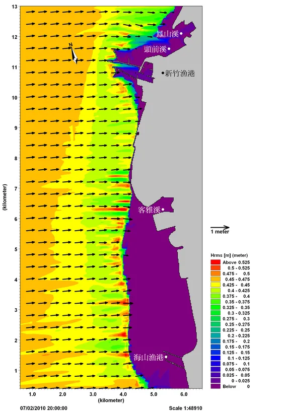
Summer夏季WSW
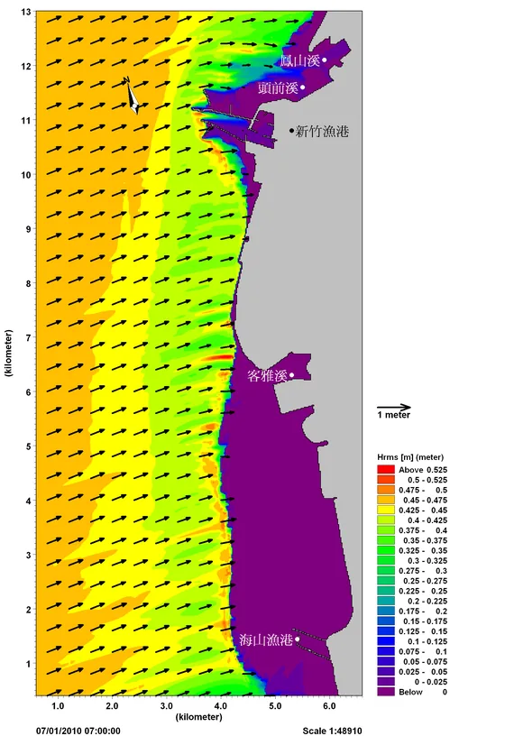
Winter冬季N
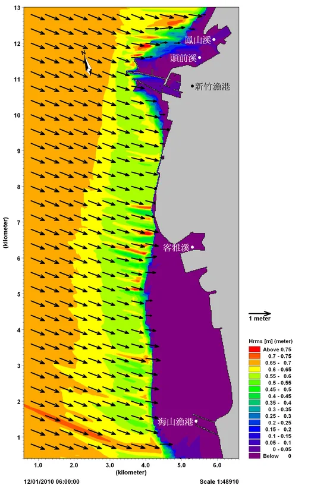
Winter冬季NNW
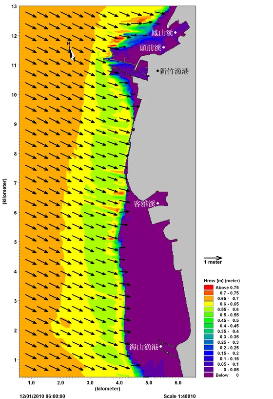
Fig. A1Simulated nearshore wave height and direction for four monsoon wave conditions. Boundary conditions from Hsinchu buoy observations.四種季風波浪條件下之近岸波高與波向分布。邊界條件採新竹觀測浮標實測資料。
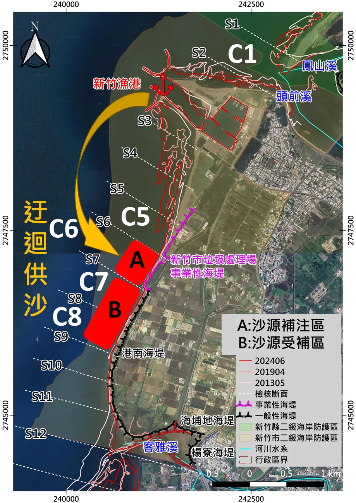
Fig. A2Sediment bypassing around the Hsinchu Fishery Harbor: placement area A, receiving area B. Shorelines 2013/05, 2019/04, 2024/06; transects S1–S12.新竹漁港迂迴供沙：A 沙源補注區、B 沙源受補區。灘線 2013/05、2019/04、2024/06；檢核斷面 S1–S12。
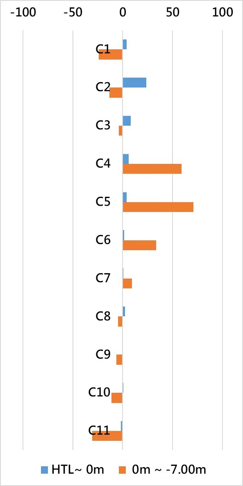
Fig. A3Erosion (−) and accretion (+) volume by cell C1–C11, Apr 2019 – Jun 2024 (unit: 10⁴ m³).各區段侵淤量體 C1–C11，2019/04–2024/06（單位：萬 m³）。
Summer monsoon. Waves from W and WSW reach the Nangang and Xiangshan segments directly; nearshore wave height is about 0.55 m. The Touqian River mouth is sheltered by the fishery-harbor breakwater, so waves there are smaller.
Winter monsoon. Larger waves spread over the area north of the harbor, the Nangang segment and offshore of Haishan Fishery Harbor. The very mild offshore slope at Xiangshan refracts incoming waves.
Sediment budget. Volumes by coastal cell were computed from surveys between April 2019 and June 2024. The intertidal beach widened after sand was placed south of the harbor.
River sediment supply and extreme sea states at the Beinan River mouth卑南溪口：河川輸砂與極值海象對海岸地形之影響
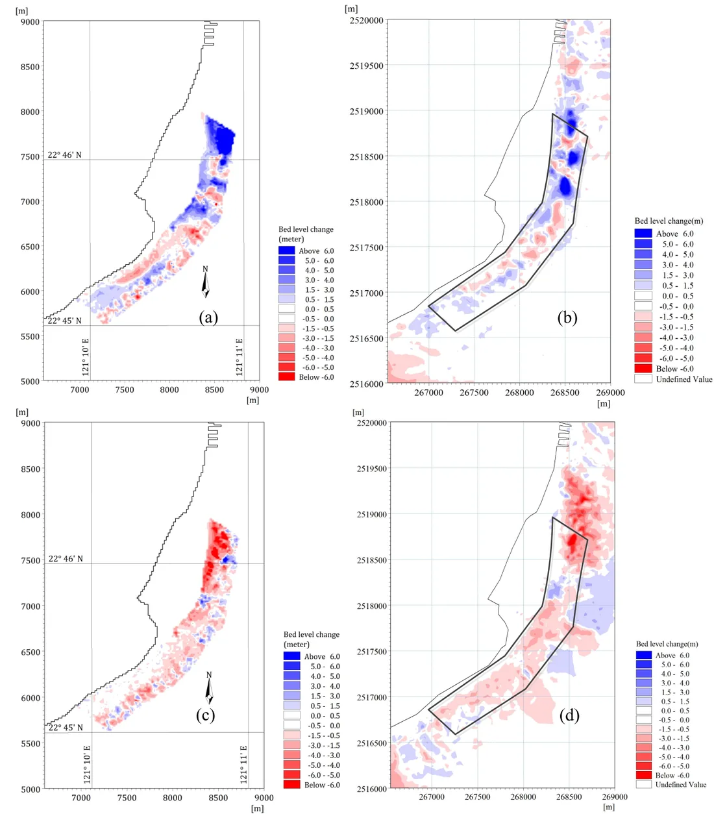
Fig. A4Measured (left) and simulated (right) bed-level change at the Beinan River mouth.卑南溪口實測（左）與模擬（右）之地形變化。
River sediment discharge is monitored in the field and fed into a morphological model of the river-mouth coast.以現場監測河川輸砂，作為河口海岸地形變遷模擬之輸入。
The model separates the effect of extreme river sediment loads from that of extreme sea states, and gives the volumes involved.分別探討極值河川輸砂量與極值海象對海岸地形之影響及量體。
Simulated bed changes are checked against repeated bathymetric surveys.模擬地形變化與實測地形比對驗證。
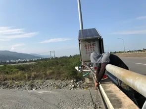
River sediment monitoring河川輸砂監測
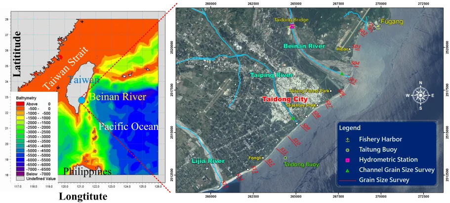
Model domain and stations模擬範圍與測站
B
Typhoon waves & extreme sea states颱風波浪、暴潮與極值海象
Simulation of typhoon waves, storm surge and extreme sea states, translated into hazard potential for specific seawalls and revetments.模擬颱風波浪、暴潮與極值海象，並轉換為個別海堤與護岸之災害潛勢。
1–2.5 mhourly mean wave height, Hualien buoy花蓮浮標逐時平均浪高
25 hwaves above 2 m (1 Sep 14:00 – 2 Sep 15:00)浪高 >2 m 持續時間
The forecast track ran north along eastern Taiwan, so the Hualien coast was mainly exposed to northerly waves.颱風路徑沿臺灣東部由南向北，近臺期間花蓮海岸主要受北浪侵襲。
North-facing shorelines on protruding headlands receive the most wave energy. On the north side of a bay, waves arrive normal to the shore for longer, so the hazard is higher than on the south side.突出岬頭面向北側之岸線受海洋營力影響最大；灣澳北側波浪垂直入射時間較長、危險度較高，南側則較低。
Wave height, direction, duration of normal incidence and hazard level were overlaid to rank seawall segments. Priority: Qixingtan revetment, Qixingtan seawall, Xinshe revetment.套疊入射波高、波向、垂直入射時長與危險度，評估各堤段風險。高風險堤段：七星潭保護工、七星潭海堤、新社海岸保護工。
Wave boundary conditions from the national marine hazard information platform (臺灣海象災防環境資訊平台).波浪邊界條件來源：臺灣海象災防環境資訊平台。
C
Coastal risk assessment & adaptation海岸災害風險評估與調適
Mapping coastal erosion risk, linking risk levels to protection measures and land-use control, and evaluating how protection works and nature-based solutions perform.建置海岸侵蝕災害風險地圖，連結風險等級與防護措施、土地利用管制，並評估防護工程與自然為本解方之成效。
Coastal erosion risk map and response levels雲林海岸：侵蝕災害風險地圖與對應措施
Risk風險等級
Response resources防救災資源投入
Infrastructure基礎軟硬體改善
Land-use control土地利用管制
Low低
Gradual較緩程度
Continuous monitoring持續監測
Low低強度
Medium中
Moderate中等程度
Planned improvement計畫改善
Medium中強度
High高
Urgent急迫程度
Immediate improvement立即改善
High高強度
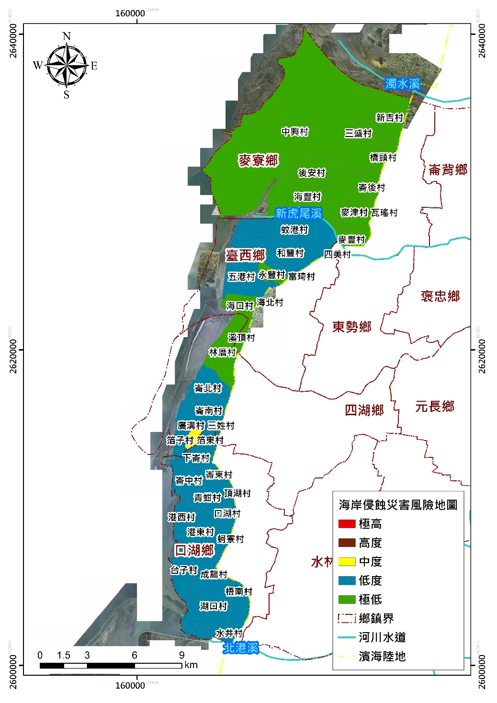
Fig. C1Coastal erosion risk by village, Yunlin coast.雲林海岸各村里海岸侵蝕災害風險。
Erosion-hotspot villages (Wengang, Hefeng, Yongfeng, Wugang, Lunnan, Guanggou, Gangxi) are mostly low to medium risk. Yongfeng is very low because its early-warning system is better than its neighbours'.侵蝕熱點岸段村里（蚊港、和豐、永豐、五港、崙南、廣溝、港西）多為中低風險；永豐村因預警制度較鄰近村里完善，為極低度風險。
Bodong village is rated medium risk and has the highest erosion-risk score on the Yunlin coast, although it currently shows no erosion potential. The drivers are a narrow wave-buffer zone, higher population density and activity, and weaker early warning.箔東村為中度風險，係雲林濱海陸地海岸侵蝕災害風險值最高之村里，目前尚無侵蝕潛勢；主因為消波緩衝帶寬度風險值較高、人口密度與活動頻繁程度較高、預警能力較弱。
Case C2 · Hualien案例 C2 · 花蓮
Performance of nourishment and submerged breakwaters, Beibin–Nanbin–Huaren coast花蓮南北濱及化仁海岸：養灘與潛堤之侵蝕防治成效
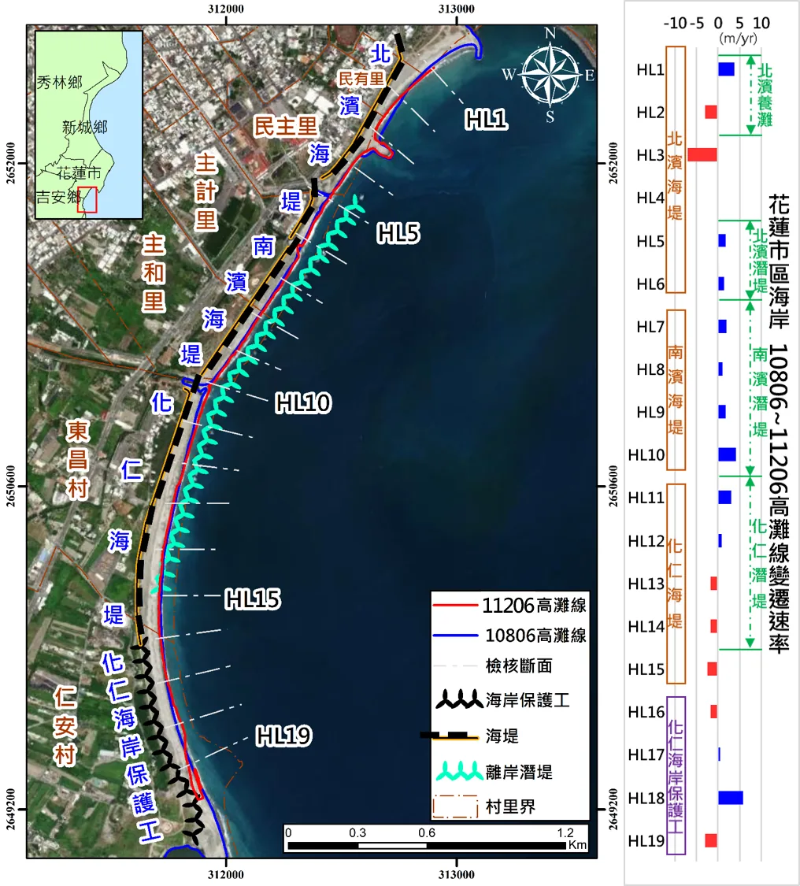
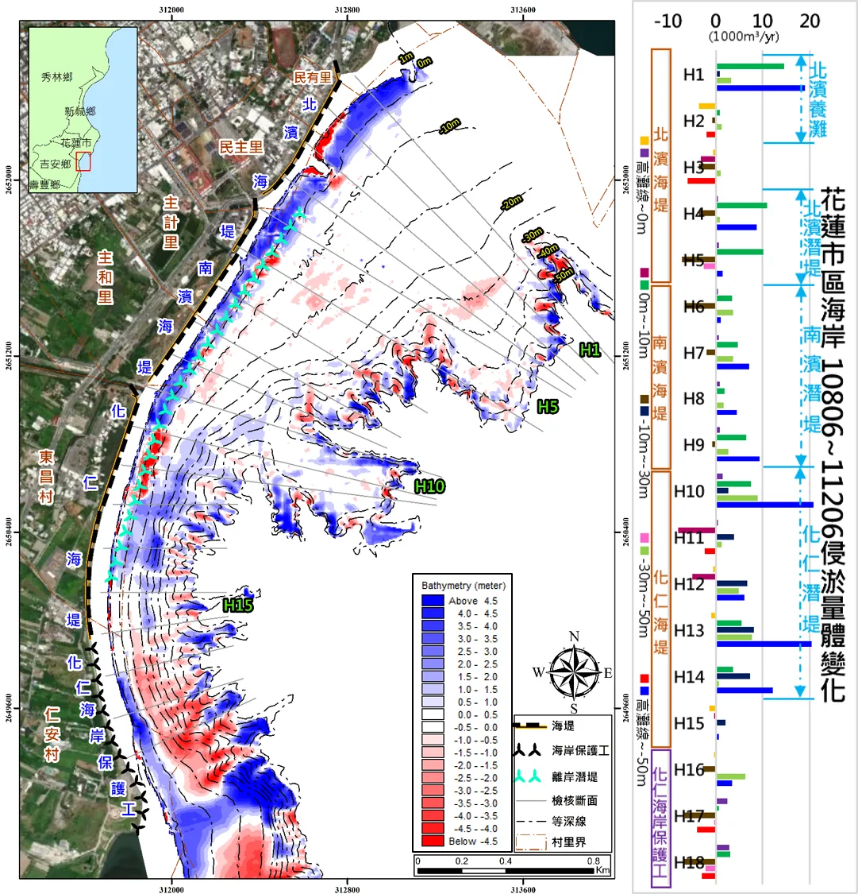
Fig. C2Bed-level change between June 2019 and December 2023, with shoreline profiles by transect.2019 年 6 月至 2023 年 12 月地形變化與各斷面灘線變化。
Beibin seawall (nourishment): beach erosion where no artificial sand is supplied; nearshore accretion from offshore transport.北濱海堤（養灘）：灘地侵蝕（無人工砂源補償）；近岸海域淤積（離岸輸砂）。
Nanbin seawall (submerged breakwater): accretion behind the breakwater, erosion in front of it. Waves break early and the water behind is calmer.南濱海堤（潛堤）：潛堤後側淤積、前方侵蝕（波浪提前碎波，後方海域靜穩）。
Huaren seawall (submerged breakwater): sand builds up to the breakwater and broken waves scour the shoreline, so the beach erodes while the nearshore accretes.化仁海堤（潛堤）：砂灘淤至潛堤、碎波沖刷灘線，灘地侵蝕；近岸海域淤積。
Huaren revetment: the largest changes, driven by sediment from the adjacent Hualien River mouth. Across this sediment cell, both the shoreline and the nearshore zone show net accretion.化仁海岸保護工：緊鄰花蓮溪口，受河川輸砂影響，侵淤變化較顯著。整體輸砂單元之灘線及近岸海域皆呈淤積。
Fig. C3Taitung city coast, January and May 2026: existing protection (left) and re-laid armour units with vegetation cover to reduce blown sand (right).臺東市區段海岸（2026 年 1 月、5 月攝）：既有保護工（左）；消波塊重新吊放佈設，輔以植生覆蓋減緩揚塵（右）。
Protect: review and upgrade existing hard structures, which remain necessary here, using ecological and hybrid protection methods that meet the design standard.保護：既有混凝土硬式設施不可少，檢討、調整與改善現有結構物，採用符合防護標準之生態、複合型海岸保護工法。
Accommodate: adjust building types, land use and livelihoods to the hazard risk, and strengthen early warning and emergency response.適應：視災害潛勢導入新的建築型態、土地利用及生產經營方式，並加強災害預警與應變機制。
Retreat: avoid or relocate when impacts exceed what protection standards and adaptation can handle.後撤：當外在衝擊超過防護標準及適應策略所能因應時，以規避、退讓方式避免損失。
Dunes as sand reserve: constructed dunes supply sand and absorb wave attack, following nature-based-solution principles. Framework: first review of Taiwan's Integrated Coastal Management Plan.砂丘工法：作為砂源補注，防治侵蝕並降低浪襲衝擊，符合 NbS 規劃原則。依據整體海岸管理計畫第一次通盤檢討之調適策略。
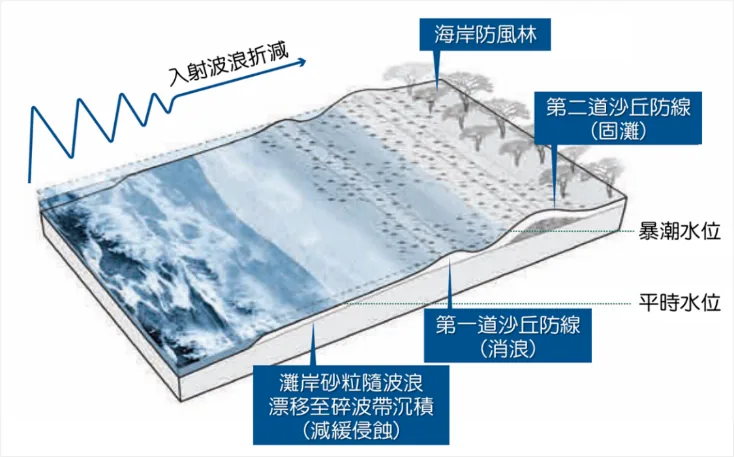
Fig. C4Sediment-balance control with dune lines (schematic).輸砂平衡控制策略－砂丘防護示意。
Case C4 · Tainan案例 C4 · 臺南
Sand-dune and sandbar restoration field trials沙丘、沙洲復育工法現地試驗
34 of Taiwan's 82 wetlands of national importance lie on the coast, covering about 49,000 ha, or 70% of their total area. Dunes and sandbars shield these wetlands from offshore waves. Commissioned by the WRA Water Resources Planning Institute, the lab tested restoration methods on the Tainan coast and transferred them to agencies through site demonstrations. The work is cited in the UN guide Options for Ecosystem-based Adaptation in Coastal Environments.國內 82 處國家重要濕地中，位於海岸地區者計 34 處，面積約 4 萬 9 千公頃，佔總面積 70%。沙丘與沙洲是海岸濕地抵禦外海風浪的天然屏障。研究室受水利署水利規劃試驗所委託進行「海岸沙丘沙洲復育規劃」，以臺南海岸為案例進行現場復育工法試驗，並辦理現場觀摩與技術移轉；研究論文獲聯合國《以生態為本之海岸環境調適策略－操作手冊》引用。
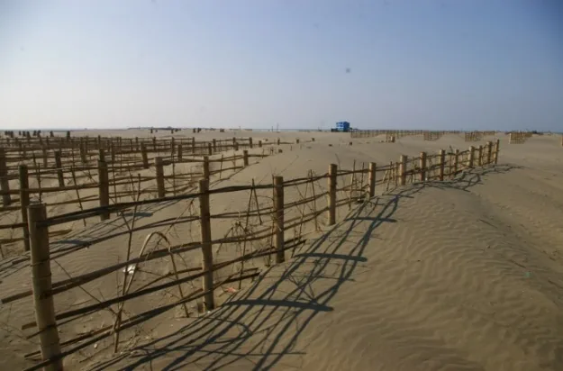
Sand-fence trial攔砂籬試驗
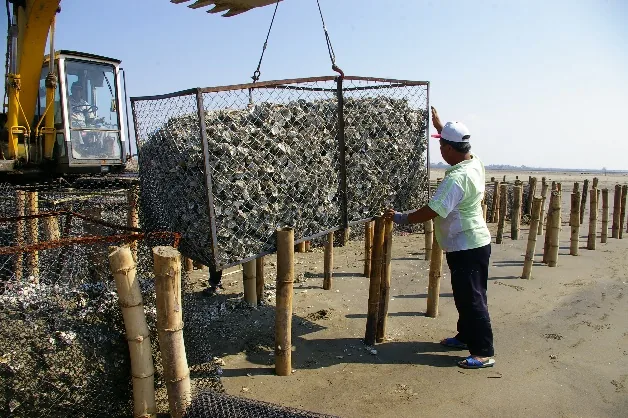
Installation on site現場施作
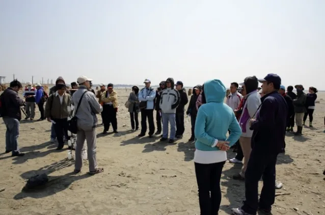
Site demonstration for agencies試驗現場觀摩
D
AI for coastal monitoring人工智慧應用於海岸監測
Deep-learning methods that turn satellite and camera images into shoreline positions and wave run-up, reducing the need for manual digitising.以深度學習將衛星與攝影影像轉換為海岸線位置與波浪溯升量，減少人工數化作業。
Deep learning深度學習
Satellite shoreline extraction衛星水線擷取
U-Net
Wave run-up波浪溯升
Coordinate transformation座標轉換
Case D1案例 D1
Long-term shoreline trends from satellite imagery衛星影像長期地形變化趨勢分析
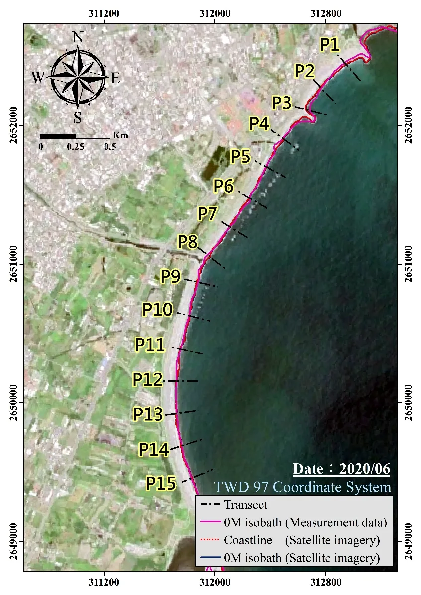
Fig. D10 m isobath from survey data vs. shoreline and 0 m isobath from satellite imagery, transects P1–P15, June 2020 (TWD97).實測 0 m 等深線與衛星影像海岸線、0 m 等深線比較，斷面 P1–P15，2020/06（TWD97）。
≈ 90%agreement of erosion–accretion results with topographic surveys衛星影像侵淤分析與地形測量結果之吻合率
A deep-learning model locates the instantaneous waterline in each satellite image.使用深度學習技術定位衛星影像中的瞬時水線位置。
Waterlines are corrected to the 0 m isobath to account for tide and wave conditions at acquisition time.考量海洋營力影響，將海岸線位置修正為 0 m 等深線。
Topographic survey data serve as the reference for accuracy assessment.以地形測量資料作為基準進行驗證。
Case D2案例 D2
Real-time wave run-up monitoring波浪溯升即時監測系統
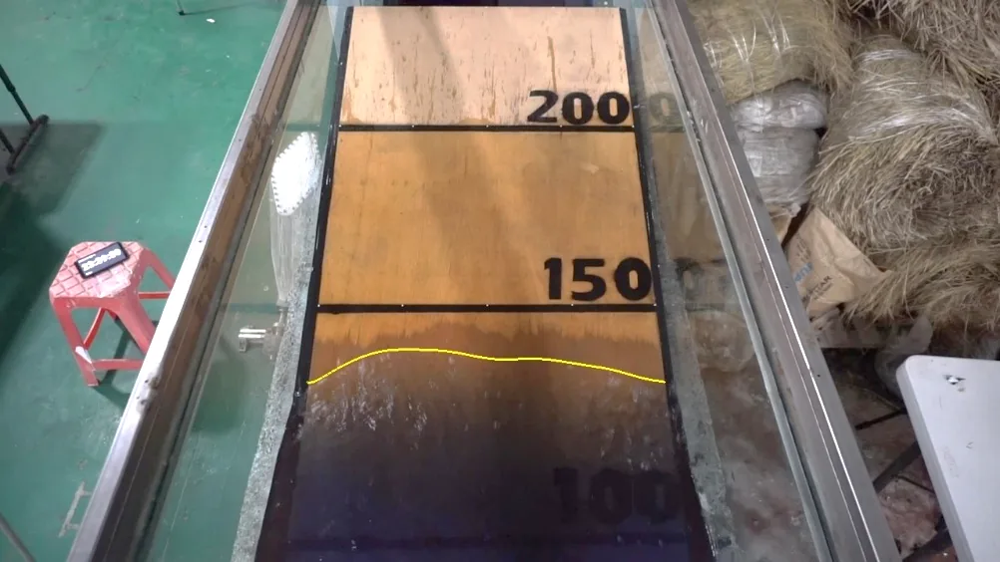
Fig. D2Run-up line detected from camera images.由影像擷取之溯升線。
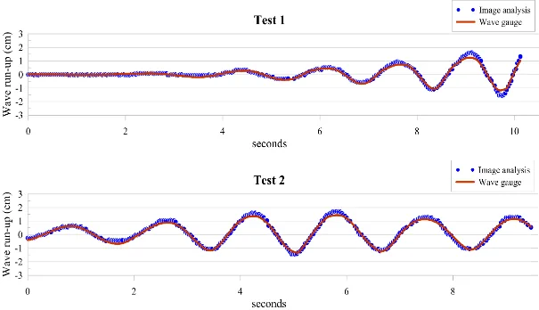
Fig. D3Image analysis vs. wave gauge, two tests.影像分析與波高計比較（兩組試驗）。
≈ 15%relative error相對誤差
A U-Net model extracts the run-up edge automatically, improving measurement precision.藉由 U-Net 模型自動化特徵擷取，提升波浪溯升量測精度。
A coordinate-transformation system maps image pixels to real-world coordinates and removes the manual digitising step.建置座標轉換系統，簡化後續繁雜的數化過程。
A low-cost wave basin and image-based measurement methods, from stereo reconstruction in the lab to radar images at a port.開發低成本造波水槽與影像量測方法，從實驗室立體重建到港口雷達影像應用。
Built from micro servo motors and controllers to avoid the cost of a large wave basin, so experiments can be repeated widely.以微型伺服馬達與控制器建置小型造波機，改善大型平面水槽成本高、難以普及的問題。
Model scale 1:500. Several units linked in series form a serpent-type wave maker.縮尺 1:500；將多台造波機串聯，建置蛇行造波機。
Wave motion is estimated by combining deep learning with conventional stereo reconstruction and validated against a wave-gauge array.結合深度學習與傳統立體重建技術估算波浪運動型態，並以波高計陣列驗證影像分析精度。
Case E2 · Taipei Port案例 E2 · 臺北港
Directional spectra and wave height from images and radar遙感探測：影像方向頻譜與雷達波高
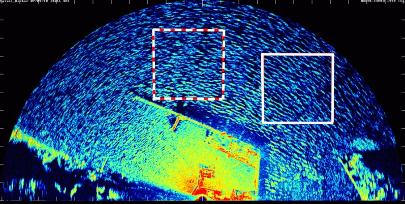
Fig. E3Radar image, Taipei Port.臺北港雷達影像。
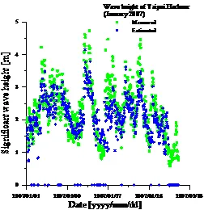
Fig. E4Significant wave height from radar images vs. measurements.雷達影像推估之示性波高與實測比較。
Digital wave images are converted to directional spectra, giving the distribution of wave energy over direction and frequency.將數位波浪影像轉換為方向頻譜，監測波浪於方向域及頻率域之分布。
Applications: monitoring wave fields, shoreline change and the position of the surf zone.應用：以遙測技術監測波場、岸線變化及碎波帶位置。
Projects研究計畫
Funded research and agency projects國科會與政府委託計畫
NSTC (formerly MOST) grants since 2012 and projects commissioned by the Water Resources Agency, local governments and other agencies since 2020.2012 年以來之國科會（含前科技部）研究計畫，以及 2020 年以來經濟部水利署、地方政府與其他機關之委託計畫。
Publications論文發表
Journal articles期刊論文
Recent (2019–2026)近年（2019–2026）11
Selected earlier work代表性早期論文
Full publication and project records: NSTC Research Talent Database and the NTOU faculty profile.完整著作與計畫紀錄請見國科會學術研發服務網與海洋大學研究人才資料庫。NTOU faculty profile ↗系所教師頁面 ↗
Facilities研究設施
Laboratory and field equipment實驗室與現場設備
Small-scale wave basin小尺度造波水槽
Glass-walled basin with servo-driven wave makers and camera-based measurement. See case E1.玻璃水槽搭配伺服馬達造波機與影像量測系統，詳見案例 E1。
Model scale縮尺
1 : 500
Wave makers造波機
Piston, flap; serpent array活塞式、推板式；蛇行串聯
Drive驅動
Micro servo motors微型伺服馬達
Measurement量測
Stereo cameras, wave-gauge array立體攝影、波高計陣列
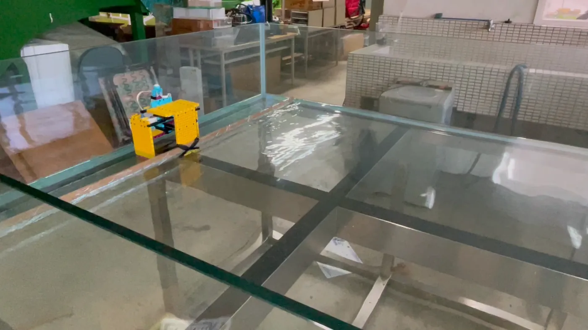
Basin layout, piston type水槽配置（活塞式）
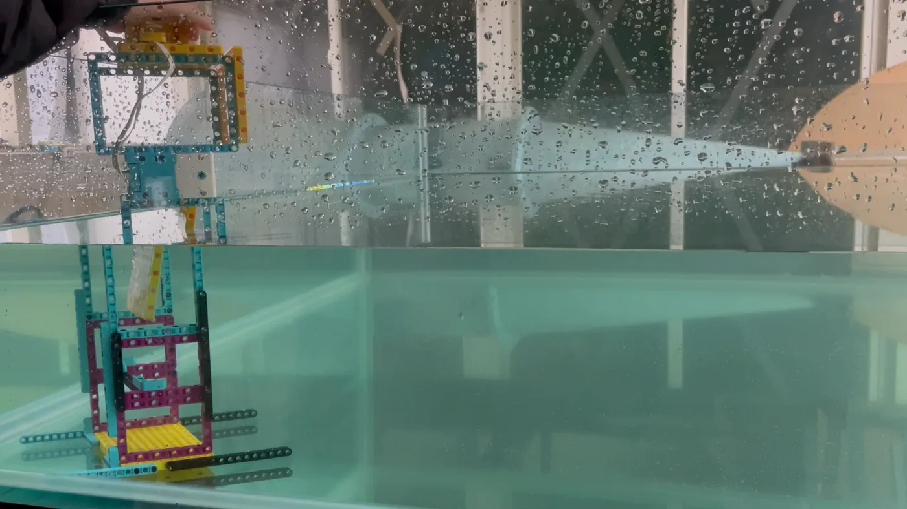
Flap-type wave maker推板式造波機
Field monitoring現場監測
Topographic and beach-profile surveys, nearshore instrument deployment and river sediment monitoring for projects along Taiwan's coast and outlying islands.執行臺灣本島與離島各計畫之地形與斷面測量、近岸儀器佈放與河川輸砂監測。
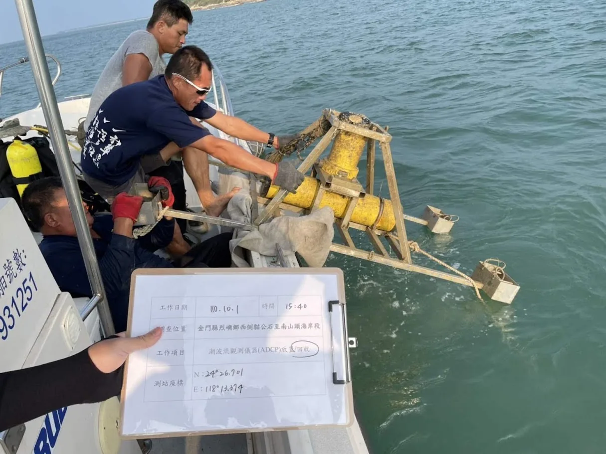
Instrument deployment from a boat船上儀器佈放
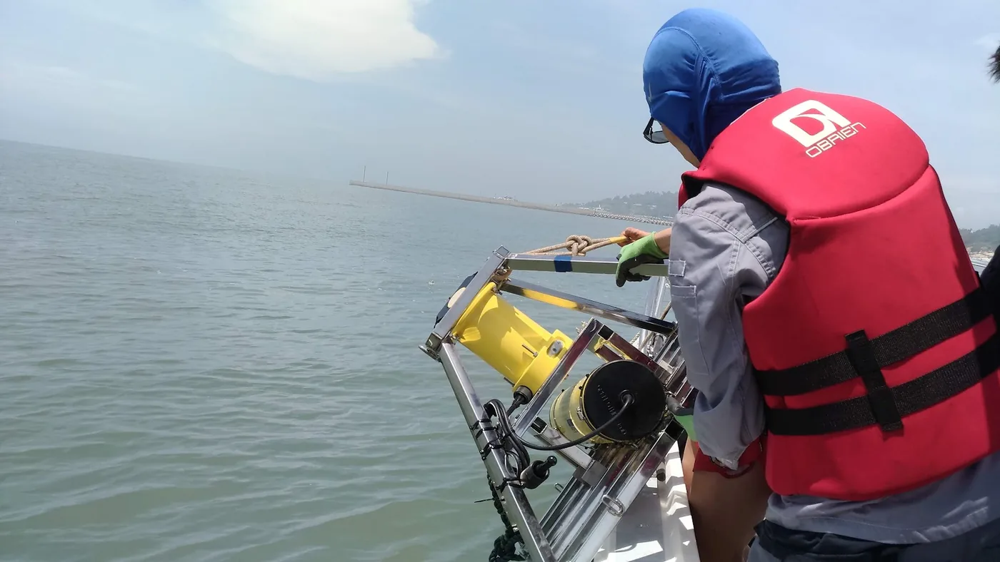
Nearshore instrument recovery近岸儀器回收
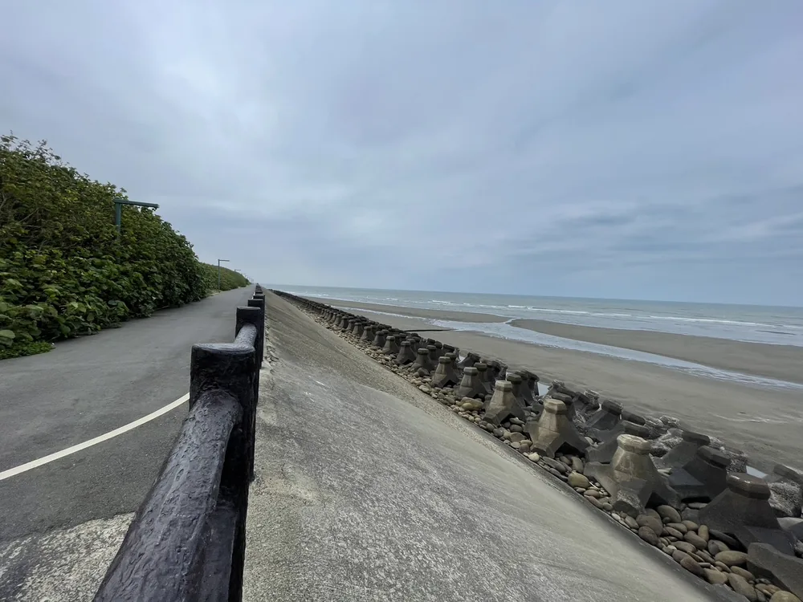
Hsinchu coast, 18 Dec 2024, mid to low tide新竹海岸，2024/12/18，平潮至低潮
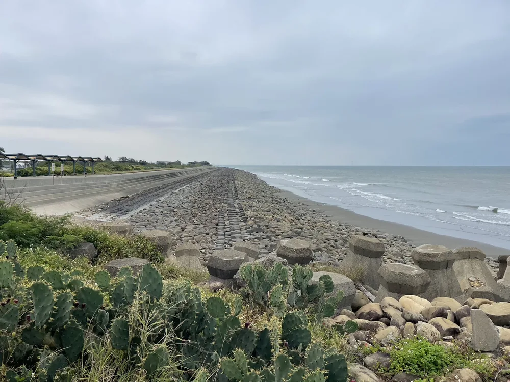
Hsinchu nourishment area新竹市海岸養灘區現況
Environmental wind tunnel環境風洞
Operated with Prof. Bao-Shi Shiau's Environmental Wind Tunnel Laboratory in the department. Used for wind engineering studies, including coastal wind-blown sand and offshore wind.與本系蕭葆羲教授環境風洞實驗室共同使用，進行風工程相關研究，包括海岸飛沙與離岸風能。
Type型式
Open-circuit, suction開放吸入式
Total length總長
22.5 m
Test section試驗段
12.65 × 2 × 1.4–1.8 m
Wind speed風速
0–30 m/s
Turbulence背景紊流
< 0.5 %
Uniformity斷面均勻性
± 1 %
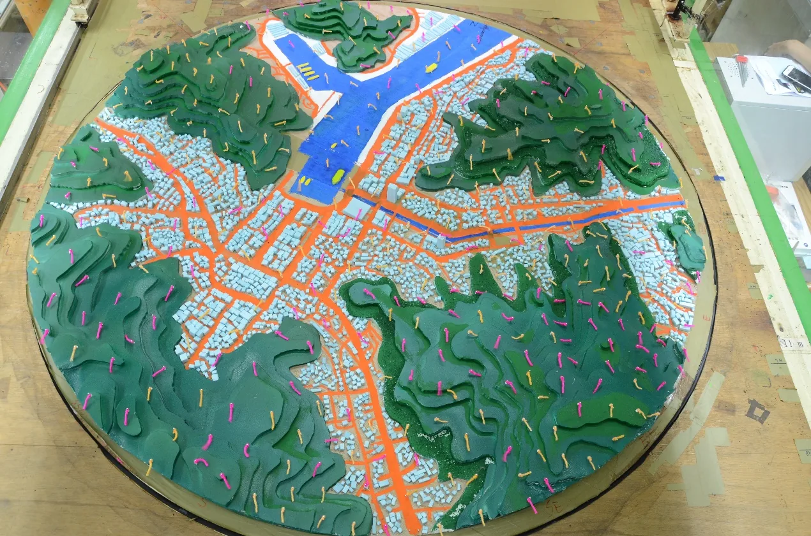
Wind tufts on a terrain model地形模型風標觀測
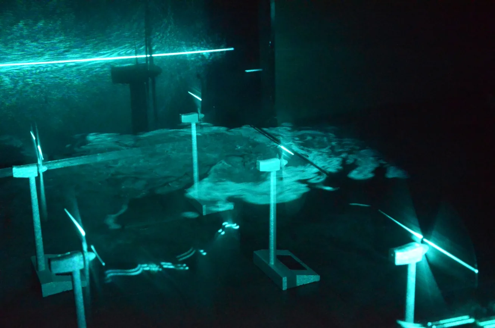
Smoke visualisation of turbine wakes風機尾跡流煙流可視化
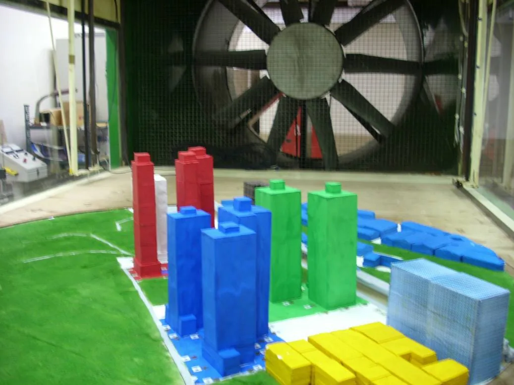
Pedestrian-level wind model行人風環境模型
For prospective students給有興趣的學生
Join the lab加入研究室
Graduate and undergraduate students interested in coastal engineering are welcome to get in touch. Research topics come from the lab's ongoing agency and NSTC projects, so students work with field data from Taiwan's coasts.歡迎對海岸工程有興趣的研究生與大學部同學聯繫。研究題目來自研究室進行中的政府委託與國科會計畫，可直接接觸臺灣各地海岸的實測資料。
Numerical modelling數值模擬
Nearshore and typhoon waves, storm surge and morphological change.近岸與颱風波浪、暴潮、海岸地形變遷。
Field monitoring現場監測
Topographic and beach-profile surveys at sites such as Hsinchu, Hualien, Taitung and Kinmen.新竹、花蓮、臺東、金門等場址之地形與斷面測量。
AI & image analysisAI 與影像分析
Shoreline extraction from satellite images and U-Net wave run-up detection.衛星影像海岸線擷取、U-Net 波浪溯升辨識。
Laboratory experiments水工實驗
Small-scale wave basin, stereo imaging and wave-gauge validation.小型造波水槽、立體影像與波高計驗證。
Email Prof. Huang with your CV, transcript and the topic you are interested in:請將履歷、成績單與有興趣的題目寄給黃老師：A0301@mail.ntou.edu.tw